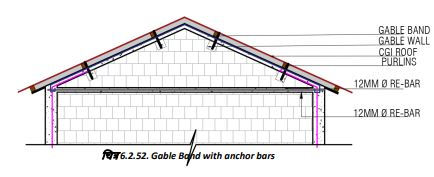
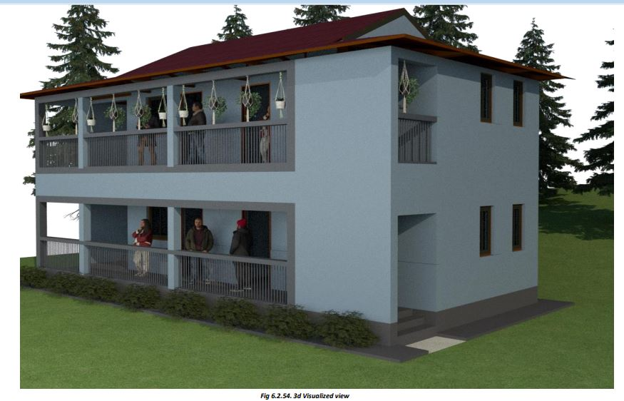
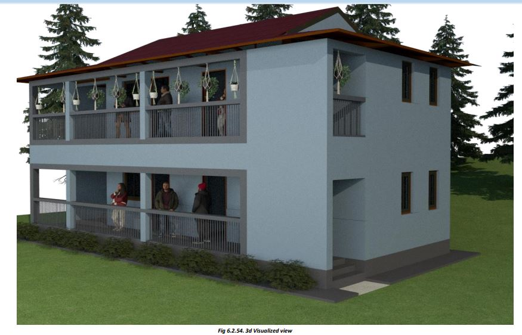

Roof Construction
● Now it is time to lay the RCC slab roof.
● Arrange a contractor or skilled masons who are well conversant with RCC slab casting.
● They will first make a temporary platform supported on ‘Ballies’ (called Shuttering). Check that the shuttering is rigid and strong, it is in level, and has provision for laborers to carry material safely.
● Now steel bars shall be provided on the shuttering.
● Red bars are the main bars, which are bent (cranked) as shown and placed on the shuttering at about 125 mm center to center.
● Bars are placed with their direction reversed alternately.
● Above the main bars, distribution bars (Blue) are placed at 230 mm center to center.
● The bars are tied with 20-gauge binding wire.
● Place spacers (if plastic/cement spacers are not available, place about 15mm thick pieces of stones) below the bars to ensure that the bars do not touch the shuttering. This is necessary to allow the concrete to go below the steel bars and properly cover them.
● After all the steel bars have been tied on the shuttering at specified gaps and spacers have been provided, concreting is done.
● To make concrete, mix 1 part cement, 1.5 parts of sand, and 3 parts of stone aggregate of about 12 mm size.
● Always use a measuring box to measure sand and stone chips. Always use a concrete mixer for better quality and strength. Mix the dry aggregates first, then add water cautiously and mix.
● The concrete should be moist but not flowing. You should be able to make a ball of the concrete in your hand that you can hold on your palm. It should neither crack nor flow on your hand. Remember, too much water lowers the strength of finally set concrete.
● Compact the concrete well to ensure that no hollow cavities are left inside. Always use an electric vibrator to compact the concrete.
● Keep the concrete moist for 28 days by keeping it covered and sprinkling/ponding water on it. The shuttering can be removed after 21 to 28 days. If the weather is cold, remove the shuttering at least after 28 days.
Step 14: Above Roof Slab
● If another floor is to be constructed, the vertical steel bars coming from the wall corners are extended through the slab and continued into the upper floor wall corners.
● If you are making a single-storey house, the steel bars will extend into the parapet wall of the roof.
● The steel bars in the parapet wall prevent the parapet walls from falling off during earthquakes.
Step 15: Making of Gable Band
The following steps are to be followed in case a gable roof is required:
● To make the Gable wall, make one course (6”) of Block masonry leaving about 300mm from each end (Fig).
● Over this course, make sloping masonry to make the gable wall at a slope of 15 to 30 degrees.
● Over the gable masonry, provide 2 nos of 10mm diameter steel bars and 6mm links as in EQ bands (as shown in Blue color) to make the RCC Gable band.
● Vertical corner bars coming from the walls (magenta color) are bent and tied to the gable band bars as shown.
● Now lay 75mm thick concrete over the Gable to make the RCC gable band.
● Provide and fix anchors of MS flat (50mmx5mm) in the gable wall and band (Fig) to fix roof purlins.
● Provide 50X50x5 mm steel angle in the RCC gable band, which will project about 40 cm from the wall. The last purlin shall be fixed on this MS angle (Fig).
Steps 9-15 are to be repeated in the case of a double-storey house. Keep in mind that in such a case, the casting of the plinth band shall not be required on the second storey. The following steps are to be followed for a double-storey house.
If you are making a double-storey house:
● Do not make the parapet; instead, continue masonry above the roof slab of the ground floor.
● Extend the vertical bars from the ground floor into the first-floor wall as you did in the ground floor.
● Provide door/window frames.
● Provide sill band, lintel band, and roof band as you did in the ground floor and continue vertical steel bars at every corner without any break, as you did in the ground floor.
● When you reach the roof level, it is time to provide an RCC slab or sloping roof using CGI sheets supported on wooden or steel trusses and other members.
1) Before concreting the Gable Band, provide anchor bars in concrete as shown, to anchor purlins to the gable band (Fig).
Fill the gaps between the purlins on the Gable wall with masonry in cement mortar. This will fix the purlins in position.
2) After the RCC Gable Bands have cured for at least two weeks, we can start assembling the Roof. We will provide wooden or steel trusses on the walls of the rooms and fix them in position (see details). The purlins are now fixed on the trusses and the Gable walls using steel clamps/cleats.
3) Once the supporting structure is ready, CGI sheets are fixed using J-bolts (and not steel screws). Also, provide rainwater gutters and pipes.
4) To avoid leakages, always punch CGI sheets upwards from below the roof and not downward from above the sheets.
The structure is now ready. Provide internal and external plaster, door/window shutters, floors, electrical, water-supply, and sanitary fittings, etc. Paint the house as per your liking.
 
